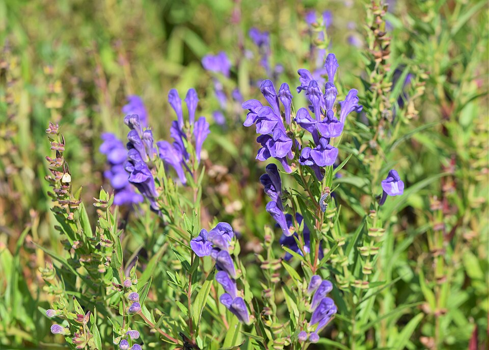
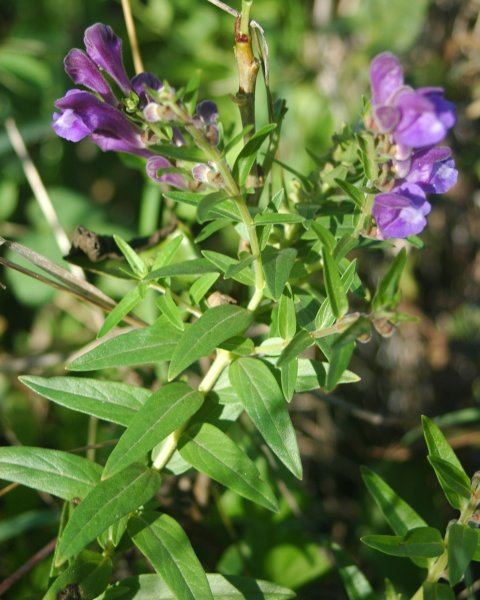

Huángqín · Baikal skullcap root黄芩
Scutellariae Radix · Heat-clearing herbs: clear heat and dry dampnessScutellariae Radix · 清热药·清热燥湿药




- Flavour · nature性味
- bitter; cold苦，寒
- Channels归经
- Lung, Gallbladder, Spleen, Large Intestine, Small Intestine肺、胆、脾、大肠、小肠经
- Direction升降浮沉
- Bitter, cold and descending; clears damp-heat and lung fire, mainly in the upper and middle burners. Raw it clears heat most strongly, wine-fried it is led upward to clear the upper burner, and charred it leans toward stopping bleeding苦寒沉降，主清中上焦湿热与肺火；生用清热力强，酒炙则上行，偏清上焦；炒炭偏于止血
- Toxicity毒性
- Non-toxic无毒
- Dose (pharmacopoeia)用量（药典）
- 3–10 g (ceiling 10 g)（上限 10 克）
Decocted; raw to clear heat, stir-fried to calm the fetus, wine-fried to clear the upper burner, charred to stop bleeding煎服；清热多生用，安胎多炒用，清上焦热酒炙用，止血宜炒炭 - Pregnancy孕期
- Caution in pregnancy孕妇慎用 Huang Qin is traditionally used to 'calm the fetus', but that is a pattern-based traditional use and the pharmacopoeia and textbooks do not list it as contraindicated in pregnancy. Health Canada's TCMI monograph, however, requires all products containing it to carry a label not to use during pregnancy or breastfeeding. Do not self-treat in pregnancy or breastfeeding; use only after assessment by a licensed practitioner or doctor.黄芩在传统上用于「安胎」，但这是中医辨证用药的传统说法，药典与教材并未将其列为孕期禁忌；不过加拿大卫生部 TCMI 专论要求所有含黄芩产品标注「孕期或哺乳期勿用」。孕期与哺乳期请勿自行使用，须由持照中医师或医生评估。
- Health Canada加拿大卫生部
- Health Canada: monograph加拿大卫生部：有专论 Health Canada's NHPID Traditional Chinese Medicine Ingredients (TCMI) monograph (May 29, 2026) lists Scutellaria baicalensis (Huang Qin, Radix Scutellariae) in Table 1, general medicinal ingredients. Every product must be labelled not to use during pregnancy or breastfeeding, to consult a health professional before use if taking prescription drugs or having a serious condition or acute infection, and to stop and seek care if symptoms persist or worsen.加拿大卫生部 NHPID「传统中药成分」（TCMI）专论（2026 年 5 月 29 日）收录 Scutellaria baicalensis（黄芩，Radix Scutellariae），列于表 1「一般医药成分」。专论要求所有产品标注：孕期或哺乳期勿用；正服处方药、有严重疾病或急性感染者用前问医务人员；症状持续或加重即停用并就医。
- Conservation资源与保护
- Supply comes from both cultivated and wild plants; no CITES listing appears in the sources retrieved for this entry; the protection grade of wild stocks is to be verified.黄芩药用以栽培与野生并用，本档检索来源中未见国际贸易公约（CITES）管制记录；具体野生资源保护级别待核。
- Source来源
- Scutellaria baicalensis Georgi. Dried root of Scutellaria baicalensis, mint familyScutellaria baicalensis Georgi（黄芩）。唇形科植物黄芩的干燥根
Traditional actions and indications功效与主治（传统）
🏛 Traditional statements, not efficacy claims; the modern evidence is graded further down.以下为传统说法，不是疗效主张；现代证据见下文分级。
- Clears heat and dries dampness清热燥湿
- Drains fire and resolves toxins泻火解毒
- Stops bleeding止血
- Calms the fetus安胎
Damp-warmth and summer-heat with chest oppression and nausea; damp-heat with epigastric fullness, diarrhoea or dysentery, and jaundice; lung-heat cough, high fever with thirst; bleeding from heat in the blood (vomiting blood, nosebleed); sores and swellings; restless fetus.湿温、暑温胸闷呕恶、湿热痞满、泻痢、黄疸；肺热咳嗽、高热烦渴；血热吐衄；痈肿疮毒；胎动不安。
How to recognise it怎么认
Growing植株 A perennial herb 30–120 cm tall with a square stem; opposite, lance-shaped, entire leaves with dark glandular dots beneath; one-sided racemes of purple-blue lipped flowers in summer. The taproot is thick and conical, bright yellow when fresh.多年生草本，高 30–120 厘米，茎四棱；叶对生，披针形，全缘，背面有黑色腺点；夏季茎顶开偏向一侧的紫蓝色唇形花，排成总状花序。主根粗大，圆锥形，鲜时黄色，断面鲜黄。
Decoction pieces饮片 Round or irregular thin slices; yellow-brown to dark brown skin; yellow-brown or yellow-green cut face, hard and brittle. Old roots often have a rotten brown-black or hollow centre (ku qin), while young roots are solid (tiao qin or zi qin). Faint smell, bitter taste.饮片为类圆形或不规则形薄片；外皮黄棕色至棕褐色；切面黄棕色或黄绿色，质硬而脆，老根中心常枯朽，呈棕黑色或空洞（称「枯芩」）；新根内部充实（称「条芩」或「子芩」）。气微，味苦。
No photo of the root slices found on Commons (2026-11-25).缺黄芩饮片照（Commons 11-25 未检到）。
Processing炮制
- Raw Huang Qin slices黄芩片（生用）：: Strongest at clearing heat, drying dampness and draining fire; used for damp-heat diarrhoea, lung-heat cough and sores苦寒清热燥湿、泻火解毒力强，用于湿热泻痢、肺热咳嗽、痈肿
- Wine-fried Huang Qin酒黄芩：: Wine leads the herb upward and softens its bitter cold; good for lung heat in the upper burner酒制引药上行，并缓和苦寒，善清上焦肺热
- Charred Huang Qin黄芩炭：: Charring keeps some heat-clearing and favours stopping bleeding from blood heat炒炭后清热兼止血，用于血热出血
Cautions and incompatibilities使用注意与配伍禁忌
Bitter and cold, it can injure yang: not for spleen-stomach cold deficiency with poor appetite and loose stools, and used cautiously without true heat. Rare case reports describe liver injury after Scutellaria products; people with liver disease or taking other liver-affecting medicines should use it only under professional guidance, and stop and seek care for jaundice, dark urine, fatigue or nausea. The upper dose of 10 g follows the pharmacopoeia; other details are to be verified.苦寒伤阳，脾胃虚寒、少食便溏者不宜；无实热者慎用。罕见个案报道服用黄芩制品后出现肝损伤，有肝病者、合用其他可能伤肝药物者应在医务人员指导下使用，出现黄疸、尿色深、乏力、恶心应停用并就医。药典用量上限 10 克，其他规格以药典为准（待核）。
Interactions with medicines与西药的相互作用
- E4 Drugs metabolised by CYP1A (e.g. theophylline, caffeine, melatonin)经 CYP1A 代谢的药物（如茶碱、咖啡因、褪黑素等）：: In vitro work shows flavonoids from Scutellariae Radix, wogonin most strongly, inhibit human CYP1A. This is enzyme-level evidence, and clinical relevance is not established in humans; tell your health professional if you take drugs cleared through CYP1A.体外研究显示，黄芩中的黄酮类成分（以汉黄芩素最强）对人 CYP1A 有较强抑制作用；这是酶学实验结果，对临床用药是否有影响尚无充分人体证据，合用经 CYP1A 清除的药物时应告知医务人员。
- E4 Prescription drugs handled by liver enzymes or transporters (general)经肝药酶或转运体代谢的处方药（泛指）：: A review collects pharmacokinetic interactions between Scutellaria baicalensis and its bioactives and a range of drugs, mostly from experimental studies; individual drugs and clinical relevance need checking, so people on prescription drugs should ask a health professional first.综述汇总了黄芩及其活性成分与多种药物的药代相互作用，主要来自实验研究，具体药物与临床意义须逐一核实，服处方药者用前先问医务人员。
Modern research, graded现代研究（分级）
- E5 A case report describes drug-induced liver injury after Scutellaria baicalensis (Chinese skullcap) products; it is a case-level safety signal that gives no incidence and does not mean pharmacopoeial doses routinely harm the liver.已有个案报告提示，服用黄芩（Chinese skullcap）制品后出现药物性肝损伤；这是个案级别的安全信号，不能据此估计发生率，也不代表常规药典剂量必然伤肝。
- E1 A systematic review and meta-analysis of pre-clinical (animal) studies preliminarily suggests that Scutellaria baicalensis and its active ingredients change depressive-like behaviours in animal models; the evidence is animal-only and cannot be extrapolated to people.一项临床前研究的系统综述与荟萃分析（动物研究）初步提示，黄芩及其活性成分可使抑郁样行为模型动物的行为改变，证据来自动物，尚不能外推到人。
- E4 A review summarises pharmacological mechanisms of total flavonoids from Scutellaria baicalensis in cardiovascular disease, drawn from animal and in vitro work; the subject is a total-flavonoid extract rather than the sliced herb.综述汇总了黄芩总黄酮在心血管疾病方面的药理机制，来源为动物与体外研究，研究对象是总黄酮提取物而非黄芩饮片。
- E1 Systematic reviews on Scutellaria baicalensis and its compounds in liver and breast cancer mostly collect experimental and mechanistic work on extracts or isolated compounds; they do not support efficacy claims for people with cancer.关于黄芩及其成分与肝癌、乳腺癌的系统综述多汇总实验与机制研究，研究对象多为黄芩提取物或单体成分，不足以支持对癌症患者的疗效主张。
In the classics古籍原文
「黃芩味苦平。主治諸熱黃疸，腸澼泄利，逐水，下血閉，惡瘡疽蝕，火瘍。」——神农本草经
Shennong Bencao Jing (Divine Farmer's Materia Medica)
The Shennong Bencao Jing lists Huang Qin for all kinds of heat, jaundice, and dysenteric diarrhoea, the foundation of its use to clear heat and dry dampness. The text calls it bitter and neutral; later tradition revised its nature to cold, closer to the modern understanding.《神农本草经》记黄芩主治诸热、黄疸、肠澼泄利，奠定了它「清热燥湿」的基本主治；其中的「肠澼泄利」就是后世所称的湿热泻痢。原文称其味苦、性平，后世《名医别录》改为「大寒」，更接近今天对黄芩性味的认识。
Where it is used: the web串联：它在哪些方里、连到哪里
Classical formulas (Shanghan, Jingui)经方（伤寒、金匮）
| Formula方 | Role角色 | Dose: original / today剂量：原书／今用 | Partners in the formula同方配伍 |
|---|---|---|---|
| Scutellaria Decoction黄芩汤 | Monarch君 | original text: see the Chinese original三两 | Báisháo (White peony root)白芍 · Da Zao (jujube)大枣 · Gāncǎo (Licorice root)甘草 |
| Pinellia Heart-Draining Decoction半夏泻心汤 | Minister臣 | original text: see the Chinese original三两 | Bànxià (Pinellia tuber)半夏 · Gānjiāng (Dried ginger)干姜 · Huang Lian (coptis rhizome)黄连 · Rénshēn (Ginseng (Asian))人参 · Da Zao (jujube)大枣 · Gāncǎo (Licorice root)甘草 |
| Bupleurum, Cinnamon Twig and Dried Ginger Decoction柴胡桂枝干姜汤 | Minister臣 | original text: see the Chinese original三两 | Cháihú (Bupleurum root)柴胡 · Guìzhī (Cassia twig)桂枝 · Gānjiāng (Dried ginger)干姜 · Tian Hua Fen (trichosanthes root)天花粉 · Mu Li (oyster shell)牡蛎 · Gāncǎo (Licorice root)甘草 |
| Bupleurum and Cinnamon Twig Decoction柴胡桂枝汤 | Minister臣 | original text: see the Chinese original一两半 | Cháihú (Bupleurum root)柴胡 · Guìzhī (Cassia twig)桂枝 · Báisháo (White peony root)白芍 · Rénshēn (Ginseng (Asian))人参 · Bànxià (Pinellia tuber)半夏 · Sheng Jiang (fresh ginger)生姜 · Da Zao (jujube)大枣 · Gāncǎo (Licorice root)甘草 |
| Bupleurum plus Dragon Bone and Oyster Shell Decoction柴胡加龙骨牡蛎汤 | Minister臣 | original text: see the Chinese original一两半 | Cháihú (Bupleurum root)柴胡 · Long Gu (fossil bone)龙骨 · Mu Li (oyster shell)牡蛎 · Bànxià (Pinellia tuber)半夏 · Sheng Jiang (fresh ginger)生姜 · Rénshēn (Ginseng (Asian))人参 · Fúlíng (Poria)茯苓 · Guìzhī (Cassia twig)桂枝 · Dàhuáng (Rhubarb root and rhizome)大黄 · Qian Dan (red lead oxide)铅丹 · Da Zao (jujube)大枣 |
| Major Bupleurum Decoction大柴胡汤 | Minister臣 | original text: see the Chinese original三兩 | Cháihú (Bupleurum root)柴胡 · Báisháo (White peony root)白芍 · Bànxià (Pinellia tuber)半夏 · Shēng Jiāng (Fresh ginger rhizome)生姜 · Zhǐshí (Immature bitter orange)枳实 · Dà Zǎo (Jujube fruit)大枣 · Dàhuáng (Rhubarb root and rhizome)大黄 |
| Licorice Heart-Draining Decoction甘草泻心汤 | Minister臣 | original text: see the Chinese original三两 | Gāncǎo (Licorice root)甘草 · Bànxià (Pinellia tuber)半夏 · Gānjiāng (Dried ginger)干姜 · Huang Lian (coptis rhizome)黄连 · Da Zao (jujube)大枣 |
| Kudzu, Scutellaria, and Coptis Decoction葛根黄芩黄连汤 | Minister臣 | original text: see the Chinese original三兩 | Gégēn (Kudzu root)葛根 · Gāncǎo (Licorice root)甘草 · Coptis rhizome (Coptidis Rhizoma)黄连 |
| Coptis and Ass-Hide Gelatin Decoction黄连阿胶汤 | Minister臣 | original text: see the Chinese original二两 | Huang Lian (coptis rhizome)黄连 · E Jiao (ass-hide gelatin)阿胶 · Báisháo (White peony root)白芍 · Ji Zi Huang (egg yolk)鸡子黄 |
| Fresh Ginger Heart-Draining Decoction生姜泻心汤 | Minister臣 | original text: see the Chinese original三两 | Sheng Jiang (fresh ginger)生姜 · Bànxià (Pinellia tuber)半夏 · Huang Lian (coptis rhizome)黄连 · Gānjiāng (Dried ginger)干姜 · Rénshēn (Ginseng (Asian))人参 · Da Zao (jujube)大枣 · Gāncǎo (Licorice root)甘草 |
| Minor Bupleurum Decoction小柴胡汤 | Minister臣 | original text: see the Chinese original三两 9 g | Cháihú (Bupleurum root)柴胡 · Bànxià (Pinellia tuber)半夏 · Sheng Jiang (fresh ginger)生姜 · Rénshēn (Ginseng (Asian))人参 · Da Zao (jujube)大枣 · Gāncǎo (Licorice root)甘草 |
| Decocted Turtle Shell Pill鳖甲煎丸 | Assistant佐 | original text: see the Chinese original三分 | Bie Jia (soft-shelled turtle carapace)鳖甲 · She Gan (belamcanda rhizome)射干 · Cháihú (Bupleurum root)柴胡 · Shu Fu (woodlouse)鼠妇 · Gānjiāng (Dried ginger)干姜 · Dàhuáng (Rhubarb root and rhizome)大黄 · Báisháo (White peony root)白芍 · Guìzhī (Cassia twig)桂枝 · Ting Li Zi (pepperweed seed)葶苈子 · Shi Wei (pyrrosia leaf)石韦 · Hou Po (magnolia bark)厚朴 · Mǔdānpí (Moutan Bark)牡丹皮 · Qu Mai (dianthus herb)瞿麦 · Ling Xiao Hua (campsis flower)凌霄花 · Bànxià (Pinellia tuber)半夏 · Rénshēn (Ginseng (Asian))人参 · Tu Bie Chong (ground beetle)土鳖虫 · E Jiao (ass-hide gelatin)阿胶 · Lu Feng Fang (wasp nest)露蜂房 · Chi Xiao (a form of saltpetre)赤硝 · Qiang Lang (dung beetle)蜣螂 · Tao Ren (peach kernel)桃仁 |
| Hou's Black Powder侯氏黑散 | Assistant佐 | original text: see the Chinese original五分 | Ju Hua (chrysanthemum flower)菊花 · Bái Zhú (white atractylodes rhizome)白朮 · Xìxīn (Asarum root and rhizome)细辛 · Fúlíng (Poria)茯苓 · Mǔ Lì (oyster shell)牡蠣 · Jié Gěng (platycodon root)桔梗 · Fángfēng (Saposhnikovia root)防风 · Rénshēn (Ginseng (Asian))人参 · Fán Shí (alum)礬石 · Dāngguī (Chinese Angelica Root)当归 · Gānjiāng (Dried ginger)干姜 · Chuān Xiōng (sichuan lovage rhizome)芎藭 · Guìzhī (Cassia twig)桂枝 |
Later formulas (Song to Qing)时方（宋元明清）
| Formula方 | Role角色 | Dose: original / today剂量：原书／今用 | Partners in the formula同方配伍 |
|---|---|---|---|
| Bupleurum and Kudzu Muscle-Releasing Decoction柴葛解肌汤 | Minister臣 | original text: see the Chinese original原文未注分量 | Sheng Jiang (fresh ginger)生姜 · Da Zao (jujube)大枣 · Cháihú (Bupleurum root)柴胡 · Gégēn (Kudzu root)葛根 · Qiang Huo (notopterygium)羌活 · Bai Zhi (angelica dahurica root)白芷 · Shígāo (Gypsum)石膏 · Báisháo (White peony root)白芍 · Jie Geng (platycodon root)桔梗 · Gāncǎo (Licorice root)甘草 |
| Angelica Six-Yellows Decoction当归六黄汤 | Minister臣 | original text: see the Chinese original等分 | Dāngguī (Chinese Angelica Root)当归 · Sheng Di Huang (rehmannia root)生地黄 · Shúdìhuáng (Prepared rehmannia root)熟地黄 · Huang Lian (coptis rhizome)黄连 · Huángbǎi (Phellodendron Bark)黄柏 · Huángqí (Astragalus root)黄芪 |
| Saposhnikovia Sage-Inspired Powder防风通圣散 | Minister臣 | original text: see the Chinese original一两 | Fángfēng (Saposhnikovia root)防风 · Máhuáng (Ephedra herb)麻黄 · Jing Jie (schizonepeta)荆芥 · Bòhe (Chinese mint)薄荷 · Dàhuáng (Rhubarb root and rhizome)大黄 · Mang Xiao (mirabilite)芒硝 · Shígāo (Gypsum)石膏 · Lian Qiao (forsythia fruit)连翘 · Zhi Zi (gardenia fruit)栀子 · Hua Shi (talc)滑石 · Jie Geng (platycodon root)桔梗 · Chuan Xiong (Sichuan lovage rhizome)川芎 · Dāngguī (Chinese Angelica Root)当归 · Báisháo (White peony root)白芍 · Bai Zhu (white atractylodes)白术 · Gāncǎo (Licorice root)甘草 · Sheng Jiang (fresh ginger)生姜 · Cong Bai (scallion white)葱白 |
| Coptis Decoction to Resolve Toxicity黄连解毒汤 | Minister臣 | original text: see the Chinese original等分 | Huánglián (Coptis rhizome)黄连 · Huángbǎi (Phellodendron Bark)黄柏 · Zhīzǐ (Gardenia fruit)栀子 |
| Gentian Liver-Draining Decoction龙胆泻肝汤 | Minister臣 | original text: see the Chinese original原文未注分量（炒） | Long Dan Cao (gentian root)龙胆草 · Zhi Zi (gardenia fruit)栀子 · Ze Xie (alisma rhizome)泽泻 · Mu Tong (akebia stem; never the aristolochia species)木通 · Che Qian Zi (plantago seed)车前子 · Dāngguī (Chinese Angelica Root)当归 · Sheng Di Huang (rehmannia root)生地黄 · Cháihú (Bupleurum root)柴胡 · Gāncǎo (Licorice root)甘草 |
| Peony Decoction芍药汤 | Minister臣 | original text: see the Chinese original五錢 | Báisháo (White peony root)白芍 · Dāngguī (Chinese Angelica Root)当归 · Coptis rhizome (Coptidis Rhizoma)黄连 · Dàhuáng (Rhubarb root and rhizome)大黄 · Mùxiāng (Costus Root)木香 · Areca seed (Arecae Semen)槟榔 · Cinnamon bark (Cinnamomi Cortex)肉桂 · Gāncǎo (Licorice root)甘草 |
| Major Notopterygium Decoction大羌活汤 | Assistant佐 | original text: see the Chinese original三钱 | Qiang Huo (notopterygium)羌活 · Du Huo (pubescent angelica root)独活 · Fang Ji (Stephania root; never the aristolochia species)防己 · Fángfēng (Saposhnikovia root)防风 · Cang Zhu (atractylodes)苍术 · Bai Zhu (white atractylodes)白术 · Xìxīn (Asarum root and rhizome)细辛 · Bai Zhi (angelica dahurica root)白芷 · Huang Lian (coptis rhizome)黄连 · Zhīmǔ (Anemarrhena rhizome)知母 · Chuan Xiong (Sichuan lovage rhizome)川芎 · Sheng Di Huang (rehmannia root)生地黄 · Gāncǎo (Licorice root)甘草 |
| Nine-Herb Decoction with Notopterygium九味羌活汤 | Assistant佐 | original text: see the Chinese original一錢 | Qiānghuó (notopterygium rhizome and root)羌活 · Fángfēng (Saposhnikovia root)防风 · Cāngzhú (atractylodes rhizome)苍术 · Xìxīn (Asarum root and rhizome)细辛 · Chuānxiōng (chuanxiong rhizome)川芎 · Báizhǐ (dahurian angelica root)白芷 · Shēngdìhuáng (raw rehmannia root)生地黄 · Gāncǎo (Licorice root)甘草 |
Folk and single-herb remedies偏方、验方、单方
| Formula方 | Use用法 | Self-use能否自用 |
|---|---|---|
| Baikal skullcap powder mixed with water for topical application (fire-cinnabar rash)黄芩末水调外涂（老小火丹） | External use外用 | See a doctor first先看医生再说 |
Patterns reached through these formulas经由这些方连到的证
- Lesser-yang pattern (half exterior, half interior)少阳证（邪在半表半里） ← Bupleurum and Cinnamon Twig Decoction柴胡桂枝汤, Minor Bupleurum Decoction小柴胡汤
- Taiyang wind strike (nutritive and defensive qi out of step)太阳中风（营卫不和） ← Bupleurum and Cinnamon Twig Decoction柴胡桂枝汤
- Combined shaoyang and yangming disease少阳阳明合病 ← Major Bupleurum Decoction大柴胡汤
- Exterior wind-cold-damp外感风寒湿（兼里热或气虚） ← Major Notopterygium Decoction大羌活汤, Nine-Herb Decoction with Notopterygium九味羌活汤
- Damp-heat diarrhoea with lingering exterior表证未解、湿热下利（协热利） ← Kudzu, Scutellaria, and Coptis Decoction葛根黄芩黄连汤
- Wind-stroke with deficiency and cold中风（正虚、风邪夹寒） ← Hou's Black Powder侯氏黑散
- Fire toxin blazing in all three burners三焦火毒热盛 ← Coptis Decoction to Resolve Toxicity黄连解毒汤
- Damp-heat dysentery湿热痢疾 ← Peony Decoction芍药汤
Exam notes (HER)考点（HER）
HER essentials: (1) Huang Qin, Huang Lian and Huang Bai all clear heat and dry dampness, with Huang Qin favouring the upper burner and lungs, Huang Lian the middle burner (heart and stomach fire), Huang Bai the lower burner; (2) raw versus wine-fried versus charred; (3) the traditional 'calms the fetus' use versus the Health Canada label against use in pregnancy; (4) bitter-cold injury to yang, cautious in spleen-stomach cold; (5) recognising tiao qin (young root) and ku qin (old root).HER 必考：①黄芩、黄连、黄柏同为清热燥湿药，黄芩偏清上焦肺热，黄连偏清中焦心胃之火，黄柏偏清下焦；②生用、酒炙、炒炭之别；③「安胎」的传统用法与加拿大「孕期勿用」标注的区别；④苦寒伤阳，脾胃虚寒者慎用；⑤条芩（新根）与枯芩（老根）的辨认。
Sources依据
- Chinese Pharmacopoeia Commission. Pharmacopoeia of the People's Republic of China, 2020 edition, vol. I国家药典委员会《中华人民共和国药典》2020 年版一部
- Zhong Gansheng (ed.). Chinese Materia Medica (national TCM higher-education textbook series)钟赣生主编《中药学》（全国中医药行业高等教育规划教材）
- Health Canada, NHPID monograph: Traditional Chinese Medicine Ingredients (TCMI), May 29, 2026 ↗
- Braude et al. Drug-induced liver injury secondary to Scutellaria baicalensis (Chinese skullcap). Intern Med J. 2019 ↗
- Tu et al. [Inhibitory effect of flavonoids from Scutellariae Radix on human cytochrome P450 1A]. Zhongguo Zhong Yao Za Zhi. 2019 ↗
- Zhou et al. Drug-herb interactions between Scutellaria baicalensis and pharmaceutical drugs: Insights from experimental studies, mechanistic actions to clinical applications. Biomed Pharmacother. 2021 ↗
- Li et al. Pharmacological effects and pharmacokinetics properties of Radix Scutellariae and its bioactive flavones. Biopharm Drug Dispos. 2011 ↗
- Ma et al. The effect of scutellaria baicalensis and its active ingredients on major depressive disorder: a systematic review and meta-analysis of literature in pre-clinical research. Front Pharmacol. 2024 ↗
- Tan et al. Pharmacological properties of total flavonoids in Scutellaria baicalensis for the treatment of cardiovascular diseases. Phytomedicine. 2022 ↗
- Ma et al. Evidence and possible mechanism of Scutellaria baicalensis and its bioactive compounds for hepatocellular carcinoma treatment. Ann Med. 2023 ↗
- Yu et al. Mechanistic Role of Scutellaria baicalensis Georgi in Breast Cancer Therapy. Am J Chin Med. 2023 ↗